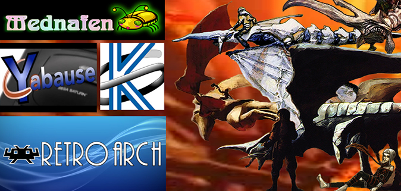
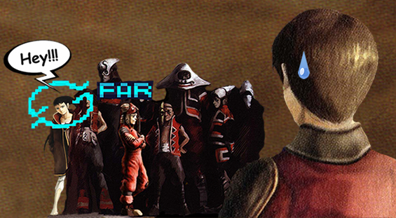

Info/ Instructions/PDS Cultures/Juba's Corner/Characters/Locations/Books/Theories/Enemies/PDS Guide//Maps/Reviews/Articles/My Profile/Links/Contact me/Moebius Artwork/Nausicaa Artwork /Emulation
Updates
| Update #25: 07/31/21 Added "Emulation" section to the site  Panzer Dragoon Saga Emulation I've added a new Emulation section to the site. This section is a tutorial on how to emulate the Panzer Dragoon Series, with setup guides for Sega Saturn emulators such as: RetroArch, RetroArch Sega Saturn Kronos Core/emulator, Mednafen emulator, Yabause 0.9.15 emulator and the Xbox emulators: Cxbx-Reloaded and Xemu. And last but not least, a tutorial on how to play these games and use these emulators in VR/3D! While I've posted about this before this is a more neat and official version of that information for the site. Good luck in all your emulation endeavors!
Update #24: 11/07/20 Major PDS Guide Update: Secret and Optional NPC Dialogue Guide  I've added a new section to my PDS Guide called Secret and Optional NPC Dialogue. This is a complete guide to the secret, hidden and optional dialogue that you can listen to between any two characters. There are many optional conversations you can miss throughout the game, so be sure to check out the guide the next time you play PDS! Other PDS guide updates: (Things You Should Know Before Playing PDS) Added 6 new details: -Information about the blue far cursor -Changing the time of day -Changing the time of day in Uru -Interacting with the environment -Information about the Telepathy Shard and its function -Learning Astral Phantoms early (Diary Entry 29: Underground Ruins of Uru Final Visit) -Information on how and where to fight the Absorborac (Diary Entry 10: (Garil Desert) Blue Ruins) -Information on how and where to fight the Samd Mites
Update #24: 10/31/20 Play Panzer Dragoon Saga in VR with Oculus Rift and Vive!!! It's possible to play Panzer Dragoon Saga in VR/3D with Oculus Rift and Vive! You have two options: Retroarch emulator with Yabause core (Recommended) or standalone with Yabause 0.9.15 using a program called ReShade. Using the RetroArch emulator and the Yabause core, you can play Panzer Dragoon Saga in 3D/VR with a special shader that splits the screen. This option lets you play the game in 3D with no resolution loss! Go here to find out how: If you want to use Yabause as a standalone emulator and play PDS in 3D See below. I would suggest the option above though as ReShade might take a hit when it comes to resolution. But, not a major difference. In conjunction with the Yabause 0.9.15 Sega Saturn emulator and two programs called Virtual Desktop and ReShade, you can indeed play Panzer Dragoon Saga in VR/3D! It's really pretty amazing to play Panzer Dragoon Saga in 3D! I've played it this way from start to finish and I don't think I'd want to go back to playing it the normal way agian! It's not full 360 VR but more like a 3D screen in front of your face. The screen is very close but not attached to your face or anything so it doesn't feel uncomfortable and you can look left and right with the 3D screen staying in the middle. Just make sure in the Virtual Desktop settings under screen options that head lock is not checked. You have to see it for yourself, the 3D makes the game feel even more immersive! So, you may be asking yourself: "So how do you play it in VR?!!. Well, I've made a quick setup guide over at the reddit forums. Follow this link for the full setup guide: (note: you can use this method for many other emulators and games as well, check out my list in the link!) How to play Panzer Dragoon Saga in VR: Full Setup Guide or here:
Update #23: 10/30/20 Panzer Dragoon Saga Outrageous Ebay prices and the State of Emulation As of now, Panzer Dragoon Saga and the Panzer Dragoon Saga Resurrection vinyl record have skyrocketed in price! Over at Ebay Panzer Dragoon Saga now goes for well over $1000 and the unsigned version of the Panzer Dragoon Saga vinyl is going for a heavty $135 with the signed version going for well over $300! I would say us Panzer Dragoon fans are lucky to have gotten a copy in the early 2000's and that's when the game was going for up to $200!
Which is why I think emulation is going to be the future, concerning how we play old games. There are a couple good Sega Saturn emulators you can try out right now that will let you play Panzer Dragoon Saga for free. Those being: Yabause and Madnafen. Yabause is good for upscaling Saturn games with smoother graphics and Madnafen, while it can't upscale, can play almost every game! Click on the pics below to view the prices as well as the emulator links! Sega Saturn Emulators: RetroArch (Use Kronos core smooths out and upscales the graphics!) Emulation Section: Full Setup Guide for Retroarch Kronos, Yabause, Mednafen and Cxbx-Reloaded
Update #22: 05/20/17 Saturn Power Magazine PDS Preview (Saturn Power issue 10 Feb. 1998) I've gotten ahold of an old issue of the UK Magazine: Saturn Power! Inside is a preview of Panzer Dragoon Saga. Apparantly, the ages of the main characters were confirmed by the previewers. You can check it out here! Or below:
Update #21: 04/16/16 Old Gamefan PDS reviews (Gamefan issue 5 May 1998) I recently discovered a few old Gamefan Panzer Dragoon Saga reviews. One of the reviewers was amazed at how original the game was for its time; all the while having to compete with Grandia! He enthusiastically states: " A beautiful, glorious game that every true gamer needs to play." Check out the reviews under Gamefan issue 5 May 1998 here! Or below:
Update #20: 11/28/15 Custom Panzer Dragoon Saga Wall Scroll With the limited amount of official Panzer Dragoon merchandise/collectibles, sometimes the fans have to take it upon themselves to create new items. There are many examples of this ranging from: Panzer Dragoon coffee mugs, Panzer Dragoon key chains, to more intricate items such as carved tablets made from stone. Now there is something any Panzer Dragoon fan can do: and that is make a custom wall scroll! Over at Custom Wall Scrolls you can take any of the beautiful art from the Panzer Dragoon series and make yourself a custom fabric wall scroll; printed on high quality polyester! Here is an example of one that I recently made: The results may vary, so try to pick a large high quality image. Try it out and display something you’re passionate about!
Update #19: 4/22/15 Old Gamefan PDS preview Added an old preview article of PDS from Gamefan Vol. 5 issue 12. This is at a time when it was thought the game had over 100 hours of gameplay lol...!
Update #18: 1/12/15 *PDS Oasis moved to GitHub Pages!* PDS Oasis has moved on over to GitHub Pages! If anyone is looking for a great free webhost with no ads; GitHub is the way to go! A Special thanks to Solo_Wing for hosting the site for all these years! If anyone is having trouble using GitHub, this tutorial may help: https://www.youtube.com/watch?v=1UiICgvrsFI
Update #17: 1/1/13 *HAPPY NEW YEAR!* Happy New Year! I've uploaded an extensive amount of Nausicaa artwork to the multimedia section of the site. They are scanned from the Nausicaa art book and quite a few pieces can only be found here. I sort of salvaged them from an old Nausicaa site I made a long while ago. So, I hope you can appreciate the artwork and creative minds that brought them into existence! Enjoy!
Update #16: 7/12/12 I just wanted to show off this cool item I saw on Ebay. It's an Azel (real stone) tablet! It's definitely cool and makes a nice display piece. I just had to snagg one myself!
Auction description: This auction is for a Panzer Dragoon Azel stone tablet decoration. There may be some slight variation of the outside edges of these tablets
as they are made from natural chipped stone.
Update #15: 8/11/09 I've added Rare Enemy Info to the Enemies section of the site as well as a similar section to the PDS Guide section: "Things You Should Know Before Playing PDS". I hope I didn't miss any rare enemies; it's been a while! Special thanks to Jonathan Auger for this much appreciated suggestion to the site!
Update #14: 9/12/08 Have any of you wanted to see an extended ending to Panzer Dragoon Saga? An ending that explained a few more mysteries? Well, there is a secret scene in Panzer Dragoon Orta which is meant to be an extended ending to PDS, explaining how the dragon was able to leave the Sestren Network. I've also uploaded this extended ending to the Movies section. Enjoy!
Update #13: 1/20/08 While not exactly Panzer related, I'd like to show you all another site I helped a friend make. It's a site dedicated to Hayao Miyazaki's Nausicaa called: The Valley of the Wind. The site contains: an extensive artwork gallery, Nausicaa OST's, movie clips, and an abundance of information. So, if you like Panzer Dragoon: Nausicaa mirrors it's world in a number of ways. Enjoy!
Update #12: 11/21/07 The December issue of Gameinformer surprisingly has a ClassicGI section dedicated to Panzer Dragoon Saga. The article sums up the games history as well as explaining its unfortunate downfall. A nice read if I don't say. It's always good to see new articles concerning our favorite game! I've also added this article to the Articles section for future reference.
Update #11: 9/12/07 I'd like to point everyone in the direction of 1Up's Panzer Dragoon Retrospective. It's a great recap explaining the history of the series, and many things are clarified by Yukio Futatsugi (series director). An awesome read for any fan of the series!
Update #10: 3/12/07 Well, I gave the site a new look. I think this background looks better than the other one. Everything flows a little bit more smoothly now. I also got rid of those blue links.
Update #9: 8/19/06 I've added the last Arzach comic called, The Legend of Arzach to the Moebius Artwork section of the site. This later story contains dialogue and is more light hearted, compared to the other Arzach comics.
Update #8: 8/12/06 You guys are in store for something special! I've gathered a collection of Moebius artwork for your viewing pleasure. The artwork consists of the complete Heavy Metal Arzach comic collection, as well as: various Arzach artwork, Moebius' Panzer Dragoon artwork, and Moebius/Panzer Dragoon Parallels. Although the dream-like world of Arzach is highly creative paralleling Panzer Dragoon in many ways, the comics do contain mild nudity. So, before you indulge yourself in Moebius' finest work, make sure you can handle the content. Above anything else: I hope you enjoy yourself while appreciating Moebius' exquisite art!
Update #7: 8/3/06 I recently wrote a new theory called Gash's Identity Theory. What secrets are concealed under Gash's mask? Why does he keep his right arm covered? Could he be a drone/half drone? Read the theory and judge for yourself.
Update #6: 5/31/06 I've added a new section to the site called "Articles". It's a collection of PDS, PDZ, PD, and PDO magazine articles ranging from: previews, reviews, strategies, and much more.
Update #5: 5/23/06 Panzer Dragoon Saga finally gets recognized as # 1. In the new June issue of Gameinformer, an article dedicated to the top 10 rare Rpgs nominates Panzer Dragoon Saga as the # 1 role-playing game! Hopefully this article will allow more people to become aware of this great masterpiece. They may even be intrigued to play the game, that is: if they can afford it. ;) Small Update: Apparently, there is also a past article from Electronic Gaming Monthly, I recently discovered called: Top 10 Cult Classics over at www.1up.com. Panzer Dragoon Saga also snagged # 1 as well! Unfortunately, this article was just recently deleted from the site. Update #4: 5/21/06 I've just added a new theory to the site called: The Coolia Inconsistency Theory. This theory discusses the possibility of different Coolia species and their evolution. Official Coolia artwork from Panzer Dragoon Orta may even prove my theory on Coolia evolution to be fact!
Update #3: 1/25/06 Panzer Dragoon Saga Oasis is now hosted by www.panzerdragoon.net! I'd like to thank Solowing for presenting me with this privilege. Now we can say good-bye to those pesky ads!
Update #2: 1/9/06 After 6 months of hard work, I just wanted to let everyone know that my Panzer Dragoon Saga guide called: Edge's Diary the Story of Panzer Dragoon Saga is finally complete! It covers basically everything, with detailed area maps/item lists, Edge's diary entries, as he visits each area of the game, enemy strategies, and a step by step overview of what you had to do in each area, pics included!
Update #1: 1/4/06 Happy New Year! Changes: I have made the menu bar buttons smaller, and divided the content up into 3 sections for easier navigation. Info section: I added tons of info on what PDS is, and how you play the game. I also added a history of the series section called "What's a Rail Shooter." Juba's Corner section: This section has been completely reworked. You can actually see the side affects of Juba's drinks happening right before your eyes! Characters, Locations, Books, Monsters sections: I added a table of contents, for each of these sections for easier navigation. Panzer Dragoon Saga Guide section: Edge's Diary: My PDS guide is almost complete! All that I have left are side quests and the final battle! I hope you all like it, I put my heart and soul into it. Maps/Item lists section: All the maps I have been making for my PDS guide, have been put into one place on the site. Review section: Added a new review by Mario Rodgers (Dragoonlover on TWOTA forums). My Profile Section: Well, lets just say I'll let you see for yourself. Hint, its below my profile. Lastly, Movies Section: Added tons of new movies from PDS. More to come in the near future! Well, that's it for now. Tell me what you all think, is it an improvement over the last version of this site? have fun but be sure not to step in any Coolia's Dung!
This website is not supported or associated with SEGA or Smilebit. Panzer Dragoon Saga and all other official Panzer Dragoon content is © SEGA, 1995-2007. |